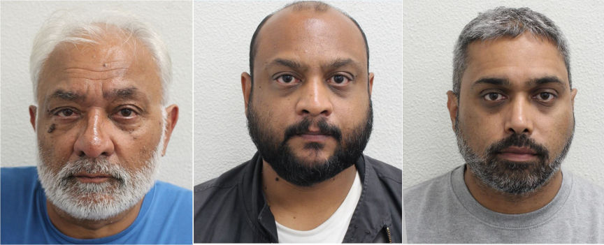
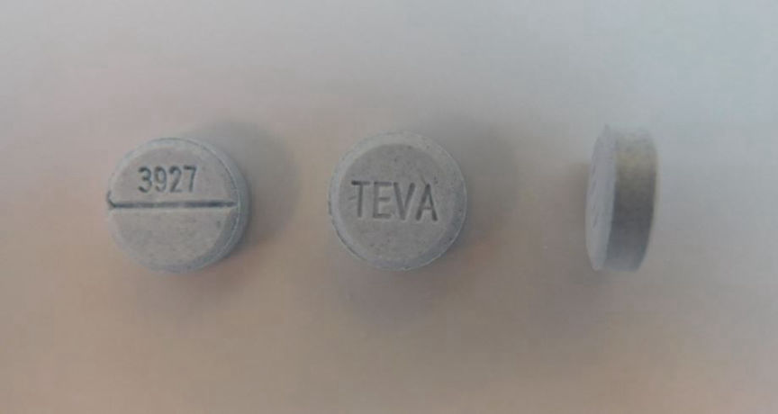
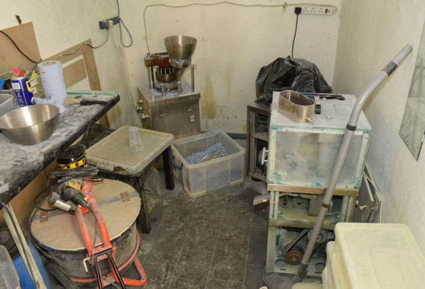
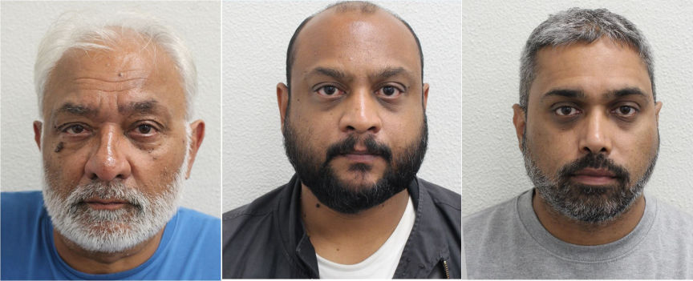
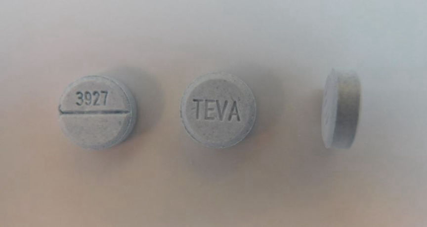
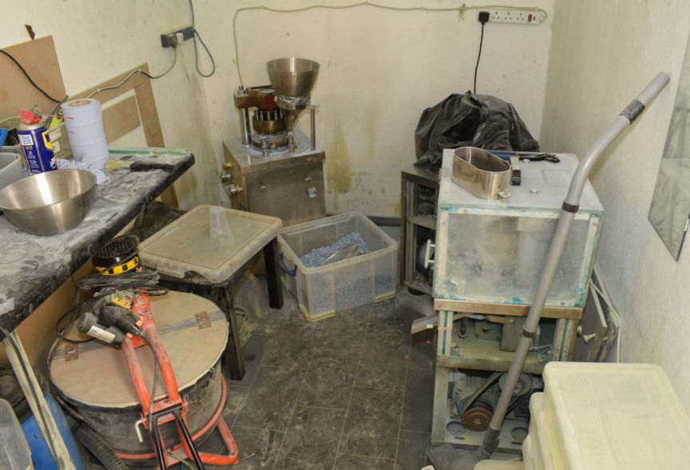

Trio Imprisoned for Dark Web Drug Trafficking
~2 min read | Published on 2023-09-09, tagged Darkweb-Vendor, Sentenced using 317 words.
Three men were sentenced to a total of 24 years in prison for their roles in a £2 million counterfeit pills production and distribution operation.

According to a Metropolitan Police press release, Allen Valentine, 62, his son Roshan Valentine, 39, and Roshan's childhood friend, Krunal Patel, 40, operated several vendor accounts on different dark web marketplaces through which they distributed counterfeit Xanax and Valium pills.

The investigators launched investigations against the trio in January 2022 after receiving information on the trio's drug trafficking operation from the DEA.
The investigations revealed that the trio operated out of a warehouse and attempted to hide the operation by running a logistics company.
They each reported to the warehouse daily and produced the pills. They then packaged them according to the orders they received from their buyers. The investigators established that Patel was in charge of mailing the drug packages as they observed him leave the warehouse with large bags and return after a few minutes without them, on multiple occasions.
On August 17, 2022, the investigators arrested Patel outside the warehouse and found him in possession of 15 drug packages addressed to recipients across the UK. The packages contained counterfeit Xanax and Teva pills. The father and son duo was arrested later that day.
A search of the warehouse resulted in the discovery of a fully equipped pill production lab. The investigators also found and seized large amounts of undisclosed chemical substances and pressed pills.

Patel and Roshan, Valentine pleaded guilty to multiple drug trafficking offenses on February 10, 2023. Allen Valentine pleaded not guilty, but was found guilty on May 9, following a trial at Isleworth Crown Court.
The trio was sentenced following a hearing at Isleworth Crown Court on September 7. Patel was sentenced to six years in prison. Roshan Valentine was sentenced to seven years in prison, while his father was imprisoned for 11 years.

Allen Valentine, Roshan Valentine and Krunal Patel
According to a Metropolitan Police press release, Allen Valentine, 62, his son Roshan Valentine, 39, and Roshan's childhood friend, Krunal Patel, 40, operated several vendor accounts on different dark web marketplaces through which they distributed counterfeit Xanax and Valium pills.

The fake pills
The investigators launched investigations against the trio in January 2022 after receiving information on the trio's drug trafficking operation from the DEA.
The investigations revealed that the trio operated out of a warehouse and attempted to hide the operation by running a logistics company.
They each reported to the warehouse daily and produced the pills. They then packaged them according to the orders they received from their buyers. The investigators established that Patel was in charge of mailing the drug packages as they observed him leave the warehouse with large bags and return after a few minutes without them, on multiple occasions.
On August 17, 2022, the investigators arrested Patel outside the warehouse and found him in possession of 15 drug packages addressed to recipients across the UK. The packages contained counterfeit Xanax and Teva pills. The father and son duo was arrested later that day.
A search of the warehouse resulted in the discovery of a fully equipped pill production lab. The investigators also found and seized large amounts of undisclosed chemical substances and pressed pills.

The laboratory
Patel and Roshan, Valentine pleaded guilty to multiple drug trafficking offenses on February 10, 2023. Allen Valentine pleaded not guilty, but was found guilty on May 9, following a trial at Isleworth Crown Court.
The trio was sentenced following a hearing at Isleworth Crown Court on September 7. Patel was sentenced to six years in prison. Roshan Valentine was sentenced to seven years in prison, while his father was imprisoned for 11 years.